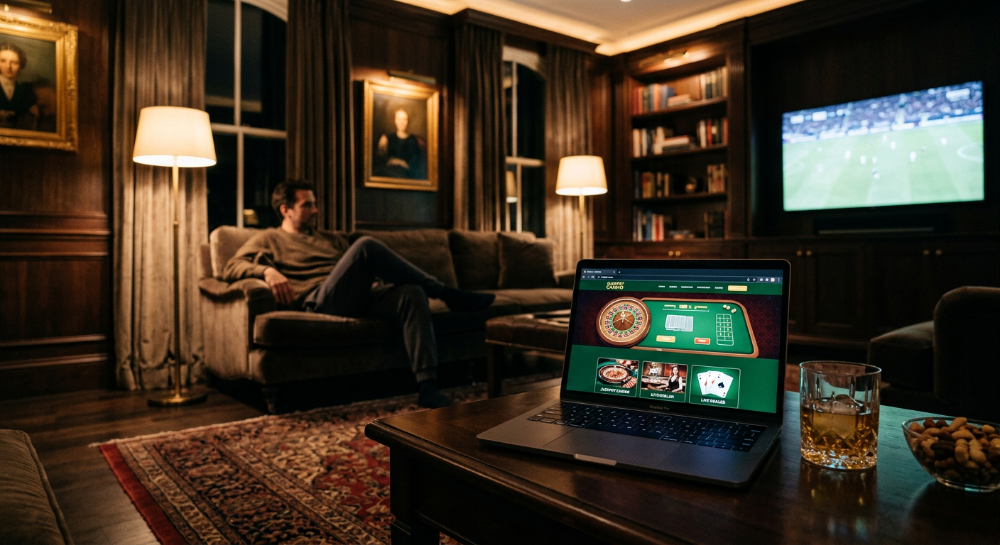
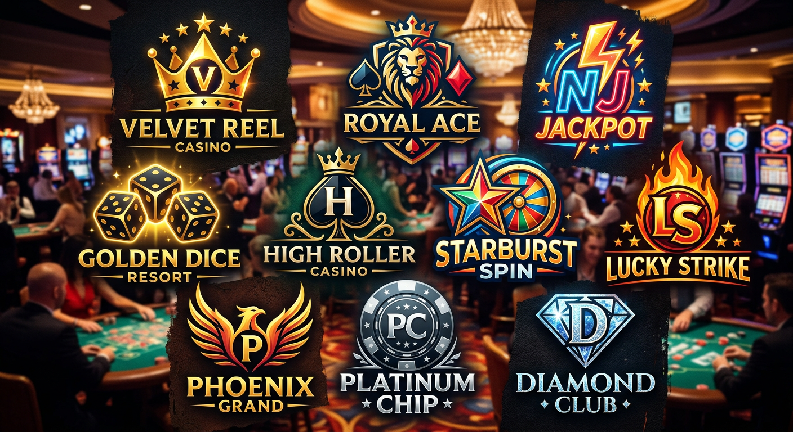
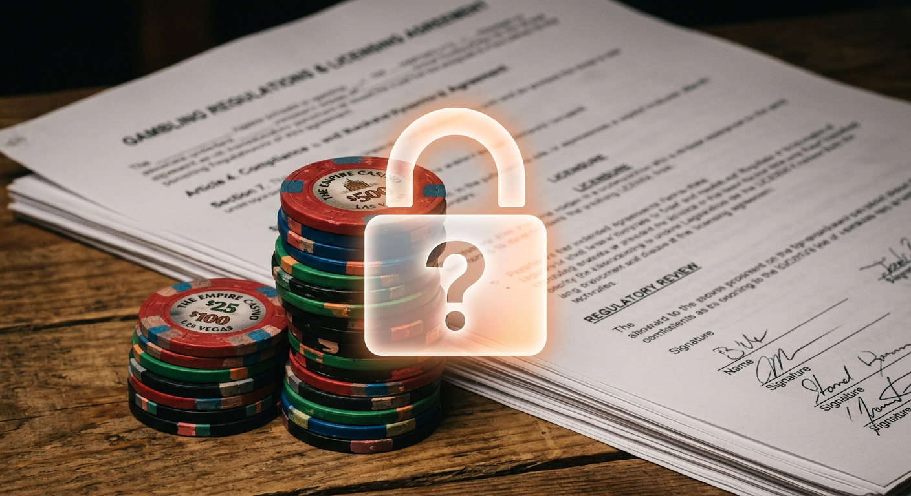
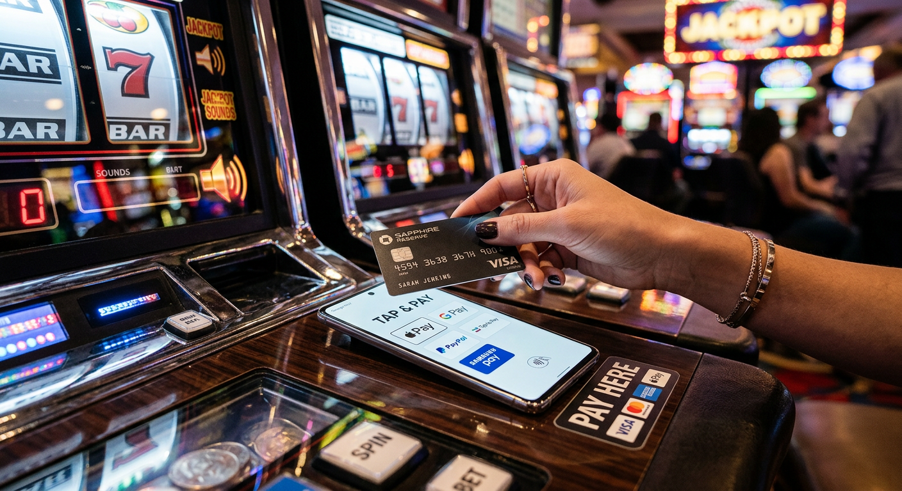
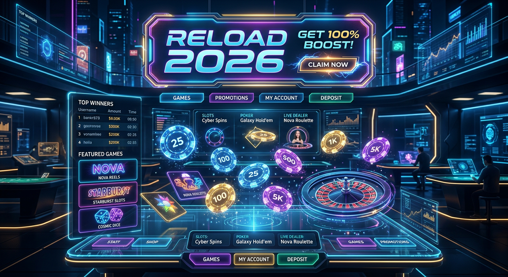

Casino zonder licentie: De complete gids voor 2026
Het online goklandschap in Nederland is in 2026 drastisch veranderd vergeleken met enkele jaren geleden. Terwijl de lokale markt verzadigd is met strikte regelgeving, zoeken steeds meer spelers naar de vrijheid van een casino zonder licentie. Hiermee bedoelen we niet dat deze sites onveilig zijn, maar dat zij opereren zonder de specifieke vergunning van de Nederlandse Kansspelautoriteit (KSA). In dit uitgebreide artikel duiken we diep in de wereld van internationaal gokken, de voordelen, de risico's en waar je in 2026 op moet letten om veilig te blijven.
De populariteit van goksites die buiten de Nederlandse grenzen opereren, is in 2026 tot recordhoogte gestegen. Dit komt mede door de toenemende beperkingen op het gebied van bonussen, speelsnelheid en de verplichte koppeling met het CRUKS-register bij Nederlandse aanbieders. Voor de ervaren gokker biedt een casino zonder licentie vaak een breder scala aan mogelijkheden, hogere limieten en een meer authentieke casino-ervaring die doet denken aan de hoogtijdagen van Las Vegas.
Het is echter essentieel om te begrijpen wat "zonder licentie" in deze context betekent. Het gaat hier bijna altijd om aanbieders die een vergunning hebben in jurisdicties zoals Malta (MGA), Curaçao of Estland (EMTA). Deze licenties bieden nog steeds een hoge mate van spelersbescherming, maar wijken af van de Nederlandse normen. In de loop van 2026 hebben we gezien dat de technologische innovaties bij deze buitenlandse partijen vaak sneller gaan dan bij de lokale spelers, wat resulteert in een superieure gebruikerservaring.
Wat is een casino zonder licentie precies?
Een casino zonder licentie is in de volksmond een term geworden voor een online gokplatform dat geen vergunning heeft van de Nederlandse KSA. In de praktijk hebben deze platforms echter bijna altijd wel een internationale licentie. Ze richten zich op een wereldwijd publiek en accepteren vaak spelers uit Nederland, ondanks dat ze niet fysiek in het land gevestigd zijn. Het is een misvatting dat deze sites illegaal zijn in de zin van onveilig; ze opereren simpelweg onder een andere wetgevende macht.
In 2026 maken we een duidelijk onderscheid tussen malafide sites zonder enige vorm van toezicht en gerenommeerde internationale merken. De laatste categorie gebruikt geavanceerde encryptie en wordt regelmatig gecontroleerd door onafhankelijke instanties zoals eCOGRA. Een online casino dat buiten de KSA om werkt, kan vaak een groter aanbod aan spellen aanbieden omdat ze niet gebonden zijn aan de restrictieve catalogus die in Nederland soms wordt opgelegd.
Het verschil tussen de KSA en buitenlandse vergunningen
De Nederlandse Kansspelautoriteit hanteert in 2026 zeer strenge regels. Zo moeten Nederlandse casino's elke speler controleren in het Centraal Register Uitsluiting Kansspelen (CRUKS). Als je hierin staat, kun je nergens in Nederland gokken. Een casino zonder licentie in Nederland heeft geen toegang tot dit register, wat zowel een voordeel als een nadeel kan zijn, afhankelijk van je persoonlijke situatie en zelfbeheersing.
Daarnaast zijn er grote verschillen in de belastingafdracht en de zorgplicht. Waar een Nederlands casino verplicht is om bij elke kleine verandering in speelgedrag in te grijpen, hanteren buitenlandse licenties zoals die van de MGA vaak een meer liberale aanpak. Dit betekent niet dat er geen toezicht is, maar de verantwoordelijkheid wordt in 2026 vaker bij de speler zelf gelegd. Voor veel Nederlandse spelers voelt dit als een verademing, omdat zij zelf willen beslissen over hun speelduur en inzet.
Waarom kiezen Nederlanders voor gokken buiten de KSA?

De voornaamste reden dat een casino zonder licentie zo aantrekkelijk is in 2026, heeft te maken met de speelvrijheid. In Nederland zijn er strikte regels voor promoties; zo mogen jongvolwassenen tussen de 18 en 24 jaar vaak geen bonussen ontvangen. Bij internationale aanbieders geldt deze restrictie meestal niet, waardoor elke speler kan profiteren van een gulle Welkomstbonus of wekelijkse extraatjes. Dit maakt het startkapitaal voor veel gokkers een stuk interessanter.
Bovendien is de snelheid van het spel in Nederland kunstmatig vertraagd. Er zit een verplichte pauze tussen spins op gokkasten en de "Auto-play" functie is vaak verboden. In een casino zonder licentie kun je vaak nog wel gebruikmaken van deze functies, wat de dynamiek van het spel ten goede komt. Voor liefhebbers van snelle actie is de internationale markt daarom de logische plek om te vertoeven in 2026.
Hogere casino bonussen en promoties
De bonusstructuren in 2026 bij buitenlandse casino's zijn simpelweg onverslaanbaar. Waar een Nederlandse aanbieder beperkt is tot kleine bedragen, zie je bij een casino zonder licentie vaak pakketten die oplopen tot duizenden euro's. Dit omvat niet alleen de eerste storting, maar vaak ook tweede en derde stortingsbonussen. Het is niet ongewoon om een matchbonus van 200% te zien, gecombineerd met honderden Free Spins op populaire kasten.
Naast de initiële extra's bieden deze platforms ook vaak een uitgebreid VIP-programma. In 2026 zijn deze programma's geëvolueerd naar gamified systemen waarbij je levels stijgt en direct beloningen ontvangt zoals cashback of fysieke prijzen. Voor de high rollers onder ons is dit een doorslaggevende factor om de Nederlandse markt links te laten liggen en te kiezen voor de ruimere mogelijkheden van de internationale sector.
Geen restricties door het Cruks-register
Het CRUKS-systeem is ontworpen om spelers tegen zichzelf te beschermen, maar in 2026 ervaren veel recreatieve spelers het als te indringerig. Een foutieve registratie of een overhaaste beslissing om jezelf voor zes maanden te blokkeren kan niet ongedaan worden gemaakt in Nederland. Bij een casino zonder licentie kun je nog steeds spelen, mits je je bewust bent van de risico's. Het biedt een uitweg voor degenen die vinden dat de overheid te veel controle uitoefent op hun vrijetijdsbesteding.
Het is wel belangrijk om te benadrukken dat verantwoord spelen nog steeds cruciaal is. Ook zonder CRUKS bieden de meeste betrouwbare buitenlandse sites in 2026 eigen instrumenten aan om limieten in te stellen. Het grote verschil is dat deze limieten specifiek gelden voor dat ene casino en niet direct je toegang tot alle goksites wereldwijd blokkeren. Dit geeft de speler in 2026 de autonomie terug die in de Nederlandse gereguleerde markt soms verloren lijkt te gaan.
Breder aanbod aan gokkasten en live games
In een casino zonder licentie vind je vaak een veel grotere bibliotheek aan spellen. Terwijl Nederlandse casino's soms maanden moeten wachten op goedkeuring van nieuwe titels, zijn de nieuwste releases van providers zoals NetEnt, Play’n GO en Pragmatic Play direct beschikbaar op de internationale markt. Denk hierbij aan populaire titels als Gates of Olympus of de nieuwste Megaways varianten die in 2026 de hitlijsten domineren.
Ook het Live Casino aanbod is vaak superieur. Je vindt er niet alleen de standaard Roulette en Blackjack tafels, maar ook innovatieve Live Casino Spellen en game shows die in Nederland soms beperkt worden door lokale regelgeving. De interactie met internationale dealers en de mogelijkheid om met hogere limieten te spelen, maakt de ervaring in 2026 compleet. Voor wie op zoek is naar variatie, is een buitenlands online casino vaak de beste keuze.
Top 10 beste casino's zonder Nederlandse vergunning

Op basis van onze uitgebreide tests in 2026 hebben we een lijst samengesteld van de meest betrouwbare en kwalitatieve aanbieders die geen KSA-licentie hebben, maar wel uitblinken in service en spelaanbod. Hieronder volgen enkele van de absolute toppers van dit moment:
- Goldbet: Een uitstekende all-rounder met een sterke focus op zowel sportweddenschappen als casino games. Bezoek Goldbet voor een indrukwekkend spelaanbod.
- Newlucky: Bekend om zijn moderne interface en zeer snelle uitbetalingen in 2026. Ontdek de bonussen bij Newlucky.
- Dragobet: Voor de avontuurlijke speler die houdt van een uitgebreid loyaliteitsprogramma. Ga naar Dragobet en begin je reis.
- Fortunicabet: Een platform dat uitblinkt in VIP-behandeling en exclusieve tafels. Bekijk Fortunicabet voor meer informatie.
- Spinorhino: De plek voor liefhebbers van duizenden verschillende gokkasten. Beproef je geluk bij Spinorhino.
- Lizaro: Een rijzende ster in 2026 met een unieke selectie aan live dealer spellen. Bezoek Lizaro vandaag nog.
- Hidden Jack: Voor spelers die waarde hechten aan privacy en razendsnelle crypto-transacties. Check Hidden Jack.
Deze merken hebben zich in de loop van 2026 bewezen als eerlijke partners voor Nederlandse gokkers. Hoewel ze elk hun eigen specialiteiten hebben, delen ze een gemeenschappelijke deler: een licentie van een gerespecteerde buitenlandse autoriteit en een vlekkeloze reputatie als het gaat om uitbetalingen en klantenservice.
Onze criteria voor een eerlijke beoordeling
Om een casino zonder licentie eerlijk te kunnen beoordelen in 2026, kijken we naar verschillende factoren. Ten eerste is de veiligheid van de verbinding en de bescherming van persoonsgegevens essentieel. We controleren altijd of er gebruik wordt gemaakt van SSL-encryptie. Daarnaast testen we de klantenservice door complexe vragen te stellen op verschillende tijdstippen. Een 24/7 live chat is in 2026 de standaard voor elk topcasino.
Een ander cruciaal punt is de transparantie van de bonusvoorwaarden. Een grote bonus is waardeloos als de rondspeelvoorwaarden onmogelijk te behalen zijn. We analyseren de "fine print" om te zien of de speler een eerlijke kans heeft om winst uit te laten betalen. Tot slot kijken we naar de snelheid van de financiële transacties. In 2026 verwachten we dat winsten binnen enkele uren tot maximaal een dag op de rekening van de speler staan.
Zijn casino's zonder vergunning veilig en legaal?

De vraag over legaliteit is in 2026 genuanceerder dan ooit. Voor de speler zelf is het in Nederland niet strafbaar om te spelen bij een casino zonder licentie. De wet richt zich primair op de aanbieders. Zolang jij als speler netjes je kansspelbelasting aangeeft (indien van toepassing buiten de EU), overtreed je geen wetten. De veiligheid hangt echter volledig af van de specifieke licentie die het casino voert.
Veel van deze casino's maken gebruik van dezelfde softwareleveranciers als de Nederlandse sites. Als je een spel speelt van NetEnt bij een MGA-casino, is de uitkomst net zo eerlijk en willekeurig als bij een KSA-casino. Het verschil zit hem puur in de administratieve afhandeling en de specifieke regels rondom spelersinterventie. In 2026 is de algemene consensus dat een ervaren speler prima veilig kan gokken op de internationale markt, mits hij zijn huiswerk doet.
De status van de Kansspelautoriteit (KSA) wetgeving
In 2026 is de KSA strenger dan ooit. Er zijn nieuwe regels ingevoerd die de maximale inzet per spin beperken en de reclame-uitingen bijna volledig aan banden leggen. Dit heeft ertoe geleid dat veel legale Nederlandse casino's een eenheidsworst zijn geworden. De wetgeving is bedoeld om gokverslaving te minimaliseren, maar heeft als bijeffect dat de aantrekkingskracht van een casino zonder licentie alleen maar groter is geworden voor de gemiddelde consument.
De KSA probeert in 2026 actief om illegale aanbieders te blokkeren via IP-blocking en betaalstops, maar de techniek staat niet stil. Veel casino's maken gebruik van mirror-sites of accepteren betaalmethoden die lastiger te controleren zijn. Hierdoor blijft de markt voor casino's buiten de Nederlandse vergunning springlevend en toegankelijk voor iedereen die dat wenst. Het is een kat-en-muisspel dat al jaren voortduurt.
Betrouwbare alternatieve licenties (MGA en Curaçao)
De Malta Gaming Authority (MGA) wordt in 2026 nog steeds gezien als de gouden standaard voor Europese goklicenties buiten Nederland. Ze hanteren strenge regels voor het scheiden van spelerstegoeden en bedrijfskapitaal. Als je speelt bij een casino zonder licentie uit Malta, weet je dat je geld in veilige handen is. Ook de klachtenprocedure bij de MGA is zeer solide en biedt spelers een echt vangnet.
Licenties uit Curaçao hebben in 2026 een enorme kwaliteitsslag gemaakt. Waar ze vroeger als minder streng werden beschouwd, hebben nieuwe lokale wetten ervoor gezorgd dat casino's daar aan veel hogere eisen moeten voldoen. Het grote voordeel van Curaçao-casino's is dat zij vaak veel soepeler zijn met Bitcoin en Ethereum betalingen. Voor de crypto-enthousiasteling is een casino zonder licentie uit Curaçao vaak de meest logische bestemming.
Populaire betaalmethoden bij deze aanbieders

Een van de grootste zorgen voor spelers bij een casino zonder licentie is hoe ze geld kunnen storten en opnemen. In 2026 zijn de opties gelukkig zeer uitgebreid. Hoewel directe koppelingen met Nederlandse banken soms worden bemoeilijkt, zijn er talloze alternatieven die net zo snel en veilig werken. Veel spelers zoeken in 2026 naar een 10 euro deposit casino om met kleine bedragen de betrouwbaarheid van de betaalmethoden te testen.
E-wallets zoals MiFinity en Jeton zijn in 2026 extreem populair geworden omdat ze een extra laag privacy bieden tussen je bank en de goksite. Ook prepaid kaarten zoals Paysafecard blijven een favoriet voor degenen die hun uitgaven strikt in de hand willen houden. De diversiteit aan betaalopties is vaak vele malen groter dan bij de Nederlandse aanbieders, die vaak enkel iDeal en creditcards ondersteunen.
Storten met iDEAL en directe bankoverschrijvingen
Hoewel het officiële iDEAL-logo soms ontbreekt bij een casino zonder licentie, maken veel van deze sites gebruik van tussenpersonen die precies hetzelfde proces faciliteren. Je herkent dit vaak aan termen als "Instant Banking" of "Volt". In 2026 werkt dit proces naadloos: je kiest je bank, scant de QR-code met je bank-app en het geld staat direct op je account. Het is veilig, herkenbaar en uiterst efficiënt.
Directe bankoverschrijvingen voor uitbetalingen zijn in 2026 ook razendsnel geworden dankzij de SEPA Instant Credit Transfer technologie. Hierdoor hoef je niet meer dagen te wachten op je winst. Bij veel van de door ons aanbevolen casino's staat je geld binnen enkele minuten op je rekening nadat de opname is goedgekeurd. Dit heeft het vertrouwen in de internationale markt in 2026 aanzienlijk versterkt.
Anoniem gokken met Cryptocurrencies
In 2026 is de adoptie van crypto in de gokwereld compleet. Een casino zonder licentie dat geen Bitcoin of Ethereum accepteert, wordt bijna als ouderwets beschouwd. Het voordeel van gokken met crypto is de enorme snelheid van transacties en de mate van anonimiteit die het biedt. Je hoeft vaak minder persoonlijke documenten te overleggen, wat het registratieproces aanzienlijk versnelt.
Naast de bekende munten zien we in 2026 ook een opkomst van stablecoins zoals USDT voor gokdoeleinden. Dit elimineert het risico van volatiliteit terwijl je geniet van de voordelen van blockchain-technologie. Veel spelers geven in 2026 de voorkeur aan deze methode omdat het hen volledige controle geeft over hun geldstromen, zonder dat banken of instanties elke transactie naar een online casino kunnen monitoren.
De rol van de Herlaadbonus in 2026

Een cruciaal element dat spelers vasthoudt bij een casino zonder licentie is de zogenaamde Herlaadbonus. In tegenstelling tot de eenmalige welkomstbonus bij Nederlandse sites, bieden internationale platforms in 2026 vaak wekelijkse of zelfs dagelijkse bonussen aan wanneer je je saldo opwaardeert. Dit kan variëren van een 25% matchbonus op maandag tot 50 Free Spins op vrijdag om het weekend in te luiden.
Deze constante stroom aan extra speelgeld zorgt ervoor dat spelers meer waarde voor hun geld krijgen. In 2026 zijn deze bonussen vaak gekoppeld aan specifieke nieuwe games, waardoor je op een goedkope manier kennis kunt maken met de nieuwste Gokkasten. Het is wel belangrijk om altijd de minimale storting te controleren; vaak is een tientje al genoeg om in aanmerking te komen voor dergelijke extraatjes.
Exclusieve deals: €10 Gratis spins voor nieuwe spelers
Marketingtechnisch gezien gaan casino's buiten de KSA in 2026 erg ver om nieuwe klanten aan te trekken. Een van de meest effectieve methoden is het aanbieden van €10 Gratis spins bij registratie, vaak zonder dat er een storting vereist is. Dit stelt spelers in staat om het casino zonder licentie risicovrij uit te proberen en zelfs echt geld te winnen zonder eigen inleg.
Dergelijke promoties zijn in Nederland nagenoeg verdwenen door de strenge reclamewetgeving, maar op de internationale markt bloeien ze in 2026 als nooit tevoren. Of het nu gaat om spins op klassiekers als Starburst of moderne toppers van Pragmatic Play, deze aanbiedingen zijn een uitstekende manier om de sfeer van een nieuw platform te proeven. Let wel op de winstlimieten die vaak verbonden zijn aan bonussen zonder storting.
Voor- en nadelen van spelen zonder licentie
Het maken van een weloverwogen keuze in 2026 vereist een eerlijk overzicht van de plus- en minpunten. Een casino zonder licentie biedt veel vrijheid, maar die vrijheid komt met een verantwoordelijkheid. Hieronder een overzicht van de belangrijkste aspecten:
| Voordelen | Nadelen |
|---|---|
| Hogere bonussen en meer promoties | Geen bescherming door het Nederlandse CRUKS-register |
| Geen beperkingen op speelsnelheid (geen 2-seconden regel) | Kansspelbelasting moet je soms zelf regelen |
| Toegang tot een breder scala aan softwareproviders | Klantenservice is niet altijd in het Nederlands beschikbaar |
| Acceptatie van Cryptocurrencies zoals Bitcoin | Bij conflicten kun je niet terecht bij de Nederlandse KSA |
Voor veel ervaren spelers wegen de voordelen in 2026 zwaarder dan de nadelen. De mogelijkheid om met hogere inzetten te spelen en te profiteren van cashback-regelingen maakt de spelervaring financieel potentieel aantrekkelijker. Echter, voor iemand die moeite heeft met zelfbeheersing, kan het gebrek aan een centraal uitsluitingsregister een serieus risico vormen bij een casino zonder licentie.
Hoe herken je een malafide goksite?
Hoewel de meeste grote internationale merken in 2026 zeer betrouwbaar zijn, zijn er altijd rotte appels. Een onbetrouwbaar casino zonder licentie herken je vaak aan een gebrek aan duidelijke licentie-informatie onderaan de homepage. Als er geen klikbaar logo van de MGA of Curaçao eGaming aanwezig is, moet je direct op je hoede zijn. Ook het ontbreken van bekende softwareproviders zoals NetEnt is een rode vlag; legitieme providers werken niet samen met illegale sites.
Een ander waarschuwingsteken zijn de uitbetalingsvoorwaarden. Als een casino in 2026 onredelijk lange verwerkingstijden hanteert (bijvoorbeeld meer dan 5 werkdagen) of als er talloze klachten op onafhankelijke fora staan over het niet uitbetalen van winsten, blijf dan weg. Lees ook altijd externe reviews op sites als Trustpilot of gespecialiseerde casino-vergelijkers. In de wereld van gokken zonder vergunning is je eigen onderzoek je beste beveiliging.
Verantwoord spelen buiten het Nederlandse toezicht
Spelen bij een casino zonder licentie betekent in 2026 dat je zelf de regie moet nemen over je gokgedrag. Omdat er geen koppeling is met nationale databases, zal niemand je tegenhouden als je te veel uitgeeft, tenzij je zelf limieten instelt op de site. De meeste gerenommeerde internationale casino's hebben een sectie "Responsible Gaming" waar je stortingslimieten, verlieslimieten en een "time-out" kunt instellen.
Het is essentieel om gokken te zien als entertainment en niet als een manier om geld te verdienen. In 2026 raden wij iedereen aan om gebruik te maken van software zoals Gamban of BetBlocker als je merkt dat je de controle verliest. Deze tools werken onafhankelijk van de licentie van een casino en kunnen je helpen om jezelf te beschermen op het internet. Een betrouwbaar casino zonder licentie zal deze tools ook vaak zelf promoten op hun website.
Het spelaanbod: Van Megaways tot Live Casino Spellen
In 2026 is de diversiteit aan spellen in een casino zonder licentie werkelijk verbazingwekkend. De techniek achter Megaways heeft zich verder ontwikkeld, met duizenden manieren om te winnen en spectaculaire bonusrondes. Providers als Pragmatic Play blijven de markt domineren met innovaties in hun slots, waarbij de visuele kwaliteit in 2026 bijna op het niveau van console-gaming ligt. Populaire spellen zoals Gates of Olympus blijven favoriet vanwege hun hoge volatiliteit en winstpotentieel.
Het Live Casino segment heeft in 2026 een enorme vlucht genomen. We zien steeds meer hybride spellen die elementen van gokkasten combineren met live presentatoren. Deze Live Casino Spellen bieden een sociale ervaring die je in je eentje op een gokkast niet vindt. Of je nu houdt van traditioneel Poker of moderne game shows, het aanbod bij een internationaal casino zonder licentie is simpelweg completer en vaak ook grafisch superieur aan de Nederlandse varianten.
De opkomst van het 10 euro deposit casino concept
Een trend die we in 2026 overal zien, is de opkomst van het 10 euro deposit casino. Dit concept is ideaal voor de voorzichtige speler die niet direct honderden euro's wil riskeren bij een casino zonder licentie. Voor slechts een tientje kun je vaak al uren speelplezier beleven, zeker als je gebruikmaakt van een bonus die je storting verdubbelt. Dit verlaagt de drempel voor nieuwe spelers aanzienlijk.
Bovendien stelt een lage instapwaarde je in staat om meerdere casino's te testen zonder een groot budget te spenderen. Je kunt kijken hoe de interface op je mobiel werkt, hoe snel de klantenservice reageert en of de spellen soepel draaien. In 2026 is dit de slimste manier voor Nederlanders om de wateren van de internationale gokmarkt te verkennen. Veel van de topmerken die we eerder noemden, zoals Spinorhino en Lizaro, hanteren deze lage minimale storting.
Vergelijking tussen Casoola en WestAce als alternatieven
Als we kijken naar specifieke namen die vaak opduiken in 2026, dan vallen Casoola en WestAce op als interessante alternatieven. Casoola staat bekend om zijn unieke visuele stijl en een zeer gebruiksvriendelijk platform dat uitblinkt in mobiele compatibiliteit. Het is een klassiek voorbeeld van een casino zonder licentie dat zich richt op een jonger, technologisch onderlegd publiek dat houdt van een speelse sfeer.
Aan de andere kant hebben we WestAce, dat een meer traditionele en chique benadering kiest. Dit platform is uitermate geschikt voor spelers die houden van hoge inzetten en een breed scala aan tafelspellen. Beide merken opereren buiten de KSA maar hebben een solide internationale reputatie opgebouwd. Ze laten zien hoe divers de markt van een casino zonder licentie in 2026 is; er is voor elk type speler wel een passend platform te vinden.
Waarom Poker nog steeds populair is op de internationale markt
Hoewel veel mensen direct aan gokkasten denken, blijft Poker een enorme trekpleister in 2026, zeker bij een casino zonder licentie. De internationale pokernetwerken zijn vele malen groter dan de lokale Nederlandse pools. Dit betekent dat er op elk moment van de dag tafels beschikbaar zijn op elk limiet, van micro-stakes tot de allerhoogste blinds. De prijzenpotten van de toernooien zijn hierdoor ook aanzienlijk spectaculairder.
Daarnaast bieden deze internationale platforms vaak geavanceerdere software met meer statistieken en aanpassingsmogelijkheden. Voor de serieuze pokerplayer is de Nederlandse markt vaak te klein en te beperkt. In een buitenlands online casino vind je de actie die nodig is om je vaardigheden echt te testen tegen spelers van over de hele wereld. In 2026 is poker bij een casino zonder licentie dan ook levendiger dan ooit.
Gokkasten met de hoogste RTP in 2026
De "Return to Player" (RTP) is in 2026 een hot topic. Veel Nederlandse casino's hebben hun RTP's verlaagd om de hoge belastingdruk te compenseren. Bij een casino zonder licentie zie je vaak nog de originele, hogere percentages. Dit betekent dat je op de lange termijn meer van je inzet terugkrijgt. Spellen van NetEnt en Play’n GO staan bekend om hun eerlijke RTP's die vaak boven de 96% liggen.
In 2026 zijn er specifieke Gokkasten die een cultstatus hebben bereikt vanwege hun royale uitbetalingen. Spelers zoeken gericht naar deze titels om hun kansen te maximaliseren. Een online casino zonder Nederlandse beperkingen kan het zich veroorloven om deze spellen met de meest gunstige instellingen aan te bieden. Voor de wiskundig ingestelde gokker is de keuze voor een casino zonder licentie daarom vaak een puur rationele beslissing gebaseerd op statistiek.
De invloed van de Welkomstbonus op de spelerskeuze
In 2026 is de Welkomstbonus nog steeds de belangrijkste factor bij het kiezen van een nieuw platform. Bij een casino zonder licentie zie je vaak constructies waarbij je niet alleen extra geld krijgt, maar ook een groot aantal Free Spins op populaire kasten. Het is een manier voor het casino om zichzelf in de kijker te spelen in een zeer competitieve markt. Voor de speler is het een kans om met meer ademruimte te beginnen.
Toch waarschuwen we in 2026 voor bonussen die "te mooi om waar te zijn" lijken. Een bonus van 500% klinkt geweldig, maar als je het bedrag 60 keer moet rondspelen binnen drie dagen, is de kans op winst nihil. De beste casino's zonder vergunning bieden in 2026 gebalanceerde bonussen aan met realistische voorwaarden (bijvoorbeeld 30x tot 35x rondspelen). Dit toont aan dat het casino op zoek is naar een langdurige relatie met de speler in plaats van een snelle winst.
Conclusie: Is een casino zonder licentie de juiste keuze?
De keuze voor een casino zonder licentie in 2026 is een persoonlijke afweging tussen vrijheid en maximale bescherming. Voor de recreatieve speler die houdt van grote bonussen, een gigantisch spelaanbod en de mogelijkheid om met crypto te betalen, is de internationale markt een paradijs. De technologische voorsprong en de soepelere regels zorgen voor een ongeëvenaarde spelervaring die we in Nederland simpelweg niet meer zien door de strikte KSA-regulering.
Echter, veiligheid moet altijd voorop staan. Kies in 2026 alleen voor gerenommeerde aanbieders met een licentie uit Malta of Curaçao en wees je bewust van je eigen grenzen. Zolang je verantwoord speelt en je eigen onderzoek doet naar de betrouwbaarheid van een platform, kan gokken bij een casino zonder licentie een veilige en uiterst vermakelijke bezigheid zijn. De toekomst van online gokken ligt in 2026 meer dan ooit in de handen van de speler zelf.
Bent u klaar om de wereld buiten de Nederlandse grenzen te ontdekken? Bekijk dan onze aanbevelingen voor topmerken zoals Goldbet of Spinorhino en ervaar zelf waarom zoveel Nederlanders in 2026 de overstap maken. Voor meer informatie over de bredere context van kansspelen in Nederland, kunt u de Wikipedia-pagina over gokken in Nederland raadplegen of de officiële richtlijnen van de Malta Gaming Authority bekijken voor internationale standaarden.
Veelgestelde vragen over casino's zonder vergunning
Is het legaal om bij een casino zonder licentie te spelen in 2026?
Ja, als Nederlandse speler ben je niet strafbaar wanneer je gokt bij een buitenlands casino. De KSA richt haar handhaving op de aanbieders, niet op de individuele consument. Wel ben je zelf verantwoordelijk voor eventuele belastingaangiftes.
Kan ik iDEAL gebruiken bij een casino zonder Nederlandse vergunning?
Veel van deze casino's bieden alternatieven aan die exact zo werken als iDEAL, vaak via betaalproviders als Volt of Instant Banking. Hierdoor kun je gewoon veilig en snel via je eigen Nederlandse bank betalen in 2026.
Zijn mijn winsten gegarandeerd bij een internationaal casino?
Bij casino's met een betrouwbare licentie (zoals MGA) zijn je tegoeden veiliggesteld. Deze autoriteiten verplichten casino's om spelersgeld op aparte rekeningen te bewaren, zodat je altijd uitbetaald krijgt, zelfs bij financiële problemen van het casino.
Wat moet ik doen als ik een probleem heb met een buitenlands casino?
In eerste instantie neem je contact op met hun klantenservice. Mocht dat niet baten, dan kun je een klacht indienen bij de desbetreffende licentieverstrekker (bijv. de MGA). Er zijn in 2026 ook diverse onafhankelijke bemiddelaars die kunnen helpen bij geschillen.
Bieden casino's zonder licentie ook hulp bij gokverslaving?
Ja, betrouwbare internationale casino's hebben in 2026 uitgebreide protocollen voor verantwoord spelen. Je kunt zelf uitsluitingen en limieten instellen. Ze werken vaak ook samen met internationale hulporganisaties om spelers te ondersteunen.

Expert in online casino's en digitaal gokken met meer dan 8 jaar ervaring in de sector.